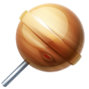
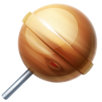

Space Clock was designed to track current time on Earth versus the time on Mars. The average length of a solar day in Mars is about 24h 39m which represents approximately 40 minutes later in Earth Time each day. This interface uses the Darian Calendar which was designed to serve the needs of human settlers on Mars. The year is divided into 24 months which is equivalent 686.86 days on Earth. To know more about it Click Here
The seconds on Mars Clock was adjusted to represent a 24hr/day like the Earth Clock. So as you can see the seconds on Mars Clock pass slowly. To be more precisely 1 second on Mars Clock is equivalent 1.027 second on Earth Clock.
To start or stop animation click the Middle Icon which is avaiable in default theme. Also you can try 10 others themes based on solar system planets by clicking them. To return to default theme click the title "Space Clock".
 
